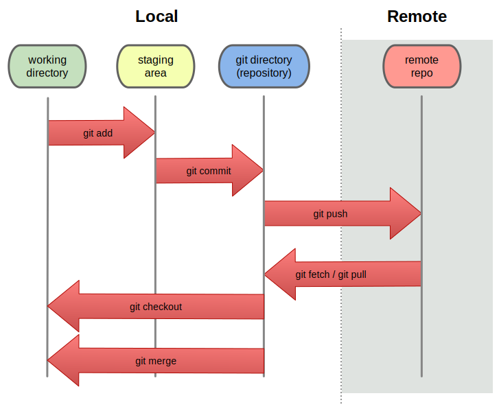

git


Workflow
$EDITORgit commitgit commit
git help --all
usage: git [--version] [--help] [-C ] [-c name=value]
[--exec-path[=]] [--html-path] [--man-path] [--info-path]
[-p|--paginate|--no-pager] [--no-replace-objects] [--bare]
[--git-dir=] [--work-tree=] [--namespace=]
[]
available git commands in '/Applications/Xcode.app/Contents/Developer/usr/libexec/git-core'
add clone fast-import interpret-trailers notes remote-testsvn submodule
add--interactive column fetch log p4 repack subtree
am commit fetch-pack ls-files pack-objects replace svn
annotate commit-tree filter-branch ls-remote pack-redundant request-pull symbolic-ref
apply config fmt-merge-msg ls-tree pack-refs rerere tag
archimport count-objects for-each-ref mailinfo patch-id reset unpack-file
archive credential format-patch mailsplit prune rev-list unpack-objects
bisect credential-cache fsck merge prune-packed rev-parse update-index
bisect--helper credential-cache--daemon fsck-objects merge-base pull revert update-ref
blame credential-osxkeychain gc merge-file push rm update-server-info
branch credential-store get-tar-commit-id merge-index quiltimport send-email upload-archive
bundle cvsexportcommit grep merge-octopus read-tree send-pack upload-pack
cat-file cvsimport gui--askpass merge-one-file rebase sh-i18n--envsubst var
check-attr cvsserver hash-object merge-ours receive-pack shell verify-commit
check-ignore daemon help merge-recursive reflog shortlog verify-pack
check-mailmap describe http-backend merge-resolve relink show verify-tag
check-ref-format diff http-fetch merge-subtree remote show-branch web--browse
checkout diff-files http-push merge-tree remote-ext show-index whatchanged
checkout-index diff-index imap-send mergetool remote-fd show-ref write-tree
cherry diff-tree index-pack mktag remote-ftp stage
cherry-pick difftool init mktree remote-ftps stash
citool difftool--helper init-db mv remote-http status
clean fast-export instaweb name-rev remote-https stripspace
git commands available from elsewhere on your $PATH
loglive
'git help -a' and 'git help -g' list available subcommands and some
concept guides. See 'git help ' or 'git help '
to read about a specific subcommand or concept.
git help --all
usage: git [--version] [--help] [-C ] [-c name=value]
[--exec-path[=]] [--html-path] [--man-path] [--info-path]
[-p|--paginate|--no-pager] [--no-replace-objects] [--bare]
[--git-dir=] [--work-tree=] [--namespace=]
[]
available git commands in '/Applications/Xcode.app/Contents/Developer/usr/libexec/git-core'
add clone submodule
add--interactive fetch log
am commit
annotate
apply tag
reset
archive format-patch
bisect merge
bisect--helper pull revert
blame gc push rm
branch
grep
gui--askpass rebase
daemon help reflog
diff remote
checkout
cherry-pick init stash
mv status
clean instaweb
git commands available from elsewhere on your $PATH
loglive
'git help -a' and 'git help -g' list available subcommands and some
concept guides. See 'git help ' or 'git help '
to read about a specific subcommand or concept.
Workflow
git init$EDITORgit addgit status
git commitgit rm
git rm log.txt
git rm *.txt
.gitignore

Link
git branch master
git checkout -b feature
git checkout master
git merge master
git rebase master



Link
git pull = git fetch + git merge